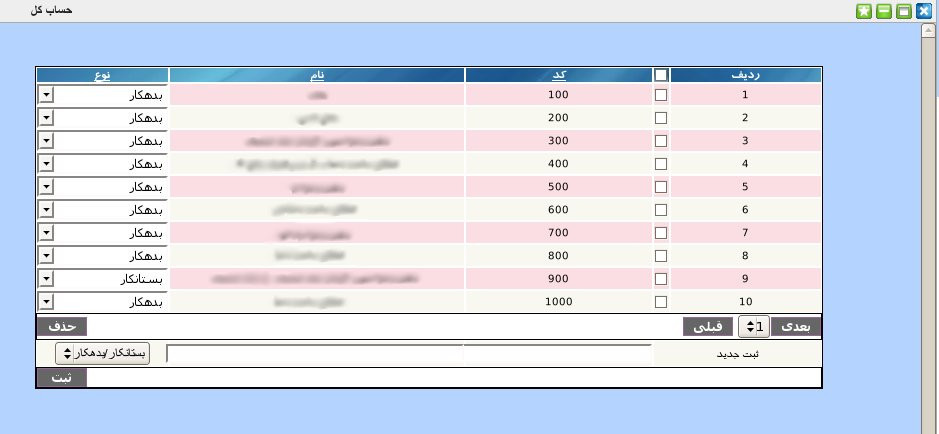

۱-حساب کل
در پنل حساب کل می توان حساب های کل مربوط به مجموعه را تعریف کنید.

برای ثبت حساب کل جدید می توانید از قسمت پایین پنل کد حساب, نام حساب و نوع بدهکار/بستانکار آن را وارد نمایید و در انتها دکمه ثبت را کلیک نمایید.
با کلیک بر روی عنوان هر ستون می توانید مقادیر هر ستون را بر اساس صعودی و یا نزولی بودن مرتب کنید.
جهت ویرایش مقادیر هر آیتم بر روی آن کلیک نمایید و پس از تصحیح کلید Enter را بزنید.
جهت حذف تکی هر آیتم, موس خود را بر روی شماره ردیف آیتم برده و بر روی لینک حذف کلیک نمایید.
جهت حذف گروهی آیتم ها, آیتم های مورد نظر را انتخاب و بر روی دکمه حذف کلیک نمایید.